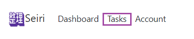

{% extends "base.html" %} {% import "bootstrap/wtf.html" as wtf %} {% block
content %}
Let's Get Started!
Here's how it works.
Head to the tasks tab in the navigation bar above.

From there you can begin adding tasks and managing them as you see fit.
{% endblock %}